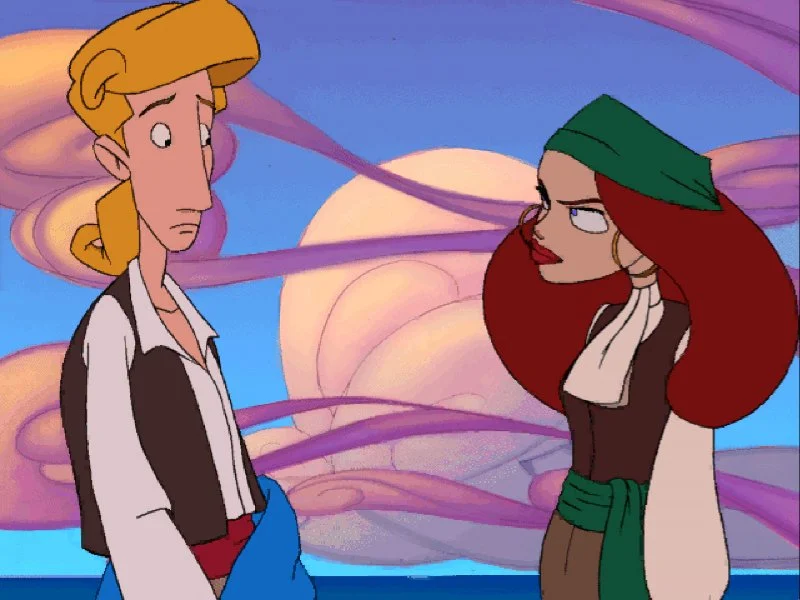
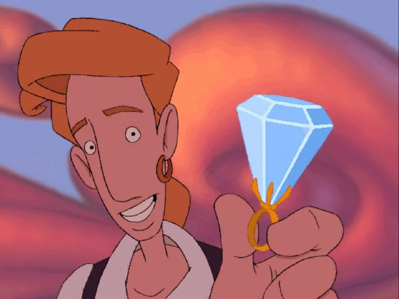
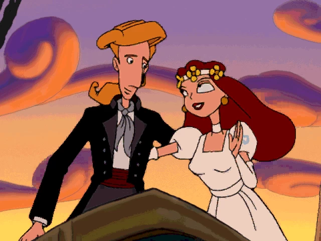
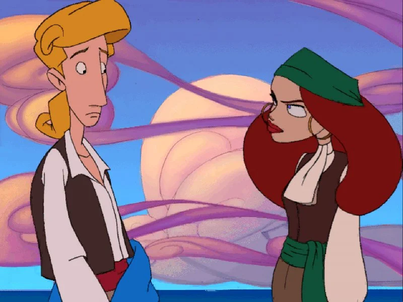
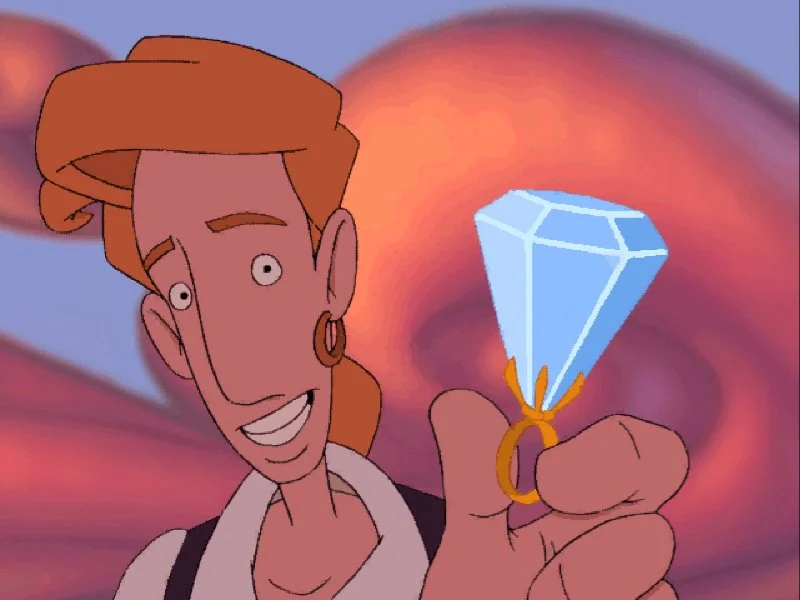
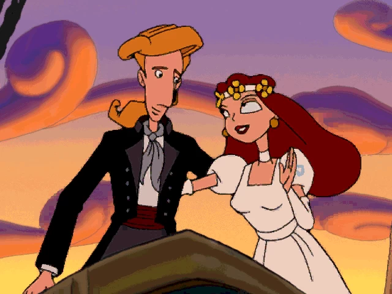

The Curse Of Monkey Island (1997)
The Curse Of Monkey Island es un videojuego de aventuras, tercera entrega de la saga Monkey Island. Guybrush Threepwood se encuentra en el mar flotando hasta que se acerca a Isla Plunder, gobernada por Elaine Marley y bajo asedio por el pirata fantasma LeChuck. Guybrush es capturado por LeChuck. Tratando de encontrar una salida, Guybrush encuentra un anillo de diamantes en el tesoro de LeChuck y escapa mientras que el buque se hunde. Es entonces cuando se reúne con su amor Elaine Marley y le propone oficialmente matrimonio. Él no es consciente de que el anillo está maldito, y Elaine se convierte en una estatua de oro tan pronto como se lo coloca. Guybrush debe entonces recuperar la estatua que es robada casi de inmediatamente y devolverla a su forma humana.